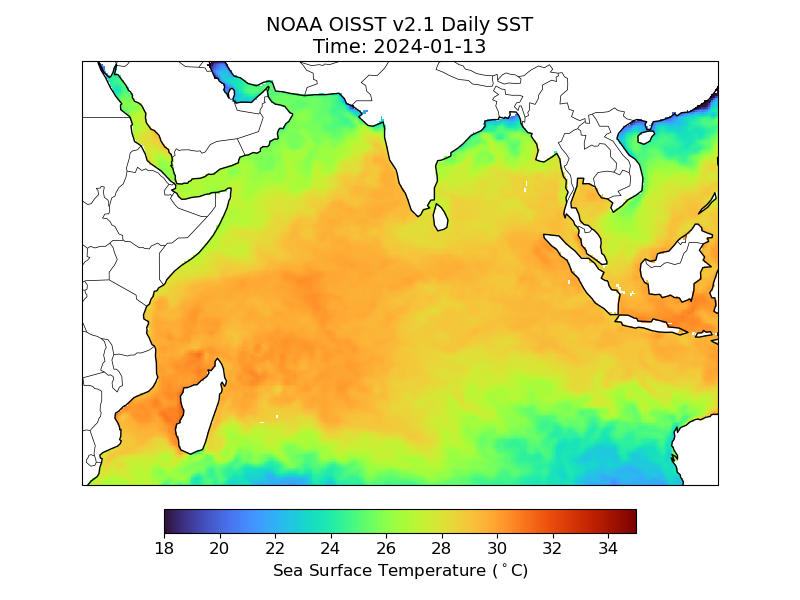

Day 1: The Absolute Basics of Python
We begin by building a solid foundation. This session covers the core concepts of the Python language, ensuring you have the fundamental skills needed before we dive into data.
Key Topics:
- Core Python Syntax & Variables
- Data Structures: Lists & Dictionaries
- Control Flow: `if` Statements & `for` Loops
- Your First Lines of Code
Day 2: Data Handling with Pandas
Learn to wrangle data like a pro. Today is all about using the powerful Pandas library to import, clean, and explore oceanographic datasets from common file formats like CSV.
Key Topics:
- Introduction to DataFrames
- Importing from CSV & TXT files
- Data Selection, Filtering & Sorting
- Handling Missing Values
Day 3: Introduction to Plotting with Matplotlib
Transform your data into insightful visualizations. We'll use Matplotlib, the cornerstone of Python plotting, to create a variety of fundamental charts like pie and bar charts.
Key Topics:
- Matplotlib Fundamentals
- Pie & Bar Charts
- Customizing Plot Appearance
- Creating Multi-Panel Figures
Day 4: Advanced & Ocean-Specific Visualization
Level up your plots with Seaborn for more aesthetic and statistically informative graphics. We will focus on creating visualizations specific to oceanography, such as vertical profiles of temperature and salinity.
Key Topics:
- Enhancing Plots with Seaborn
- Creating Vertical Profiles (Temp/Salinity)
- Time Series Analysis Plots
Day 5: Geospatial Data & Pseudo-Color Plots
The final day brings everything together as we explore geospatial data. You'll learn to handle gridded NetCDF data with Xarray and plot it to create pseudo-color plots, showcasing how to represent spatial patterns.
Key Topics:
- Gridded Data with Xarray
- Pseudo-Color & Contour Plots
- Visualizing Sea Surface Temperature
- Capstone: Combining Datasets
Sample NetCDF Data from NOAA
A representative image of a NetCDF data product from NOAA, as often seen in oceanography.
Sample gridded Data on globe

SST Data on globe.